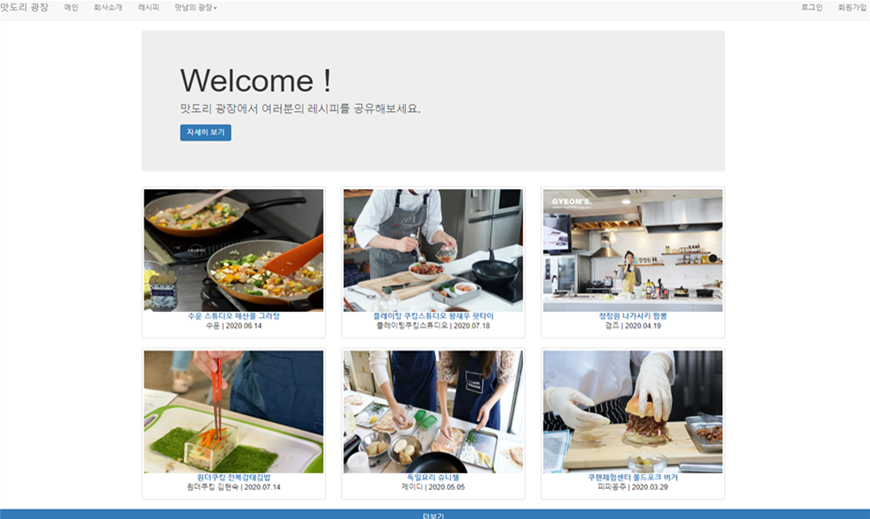

PortFolio
레시피 Web

1. 개요
‘백종원’이라는 브랜드로 요식업계의 폭풍적인 성장이 이루어지고 있다. 이로 인해 요리를 더 쉽게 생각하게 되었으며 시도 할 수 있게 되었다. 이에 맞춰 우리만이 가지고 있는 레시피를 공유하는 공간도 필요하다고 생각되어 이 프로젝트를 진행하게 되었다. 레시피를 공유하고, 클래스에 참여함이 함께 성장할 수 있는 가치를 추구한다. ‘맛도리 광장’은 레시피를 한 번에 볼 수 있으며 클래스를 통한 직접적인 소통이 될 수 있는 레시피 공유 사이트이다.
2. 구현 내용
기본적으로 로그인과 회원가입을 구현하며, 레시피 게시판과 모집공고 게시판, 갤러리를 구현한다.
3. 기대 효과
프로젝트를 통해 웹 사이트의 모든 구성요소가 하나의 기능을 가지고 있으며, 이를 구현해 내기 위해 많은 노력이 필요하다는 것을 알아야 한다. 단순한 기능들이지만 예민하게 반응할 줄 알고, 유기적으로 어떻게 작동하는지 정확하게 알아야 한다.
IoT 클라우드 서비스

1. 개요
클라우드를 기반으로 IoT를 사용해 LED와 온습도 센서를 제어한다. Firebase와 Web App, NodeMCU, AndroidApp이 실시간으로 인터넷을 통해 데이터를 주고받으며, 이 데이터는 Firebase의 Database에 저장되는 구조로 시스템이 구성된다.
2. 구현 내용
LED를 제어한다는 것에 맞춰 전구로 디자인 했으며, Android App에서는 ON/OFF가 더 직관적으로 보이기 위해 문자의 색을 상태에 따라 바뀌도록 설정한다. Wep App과 Android App은 서로 연동되어 같은 데이터베이스 값을 주고받아 출력하여 동작한다. 온도, 습도, 네트워크 상태, 시간, 그래프가 한 눈에 보이도록 디자인 했으며, 특히 그래프를 CanvasJS로 데이터를 시각화 시켜 효과적으로 결과 값을 확인 할 수 있도록 했다. Android App에서는 Web App과 다르게 current data로 재배치 하여 효율적인 시각효과를 주었다. Web App과 Android App은 서로 연동되어 같은 데이터베이스 값을 주고받아 출력하여 동작한다.
3. 기대 효과
프로젝트를 통해 실시간으로 데이터를 주고 받는 방식을 정확히 알아야하며, 실생활에서 IoT가 어떻게 사용 되는지 알 수 있어야 한다.